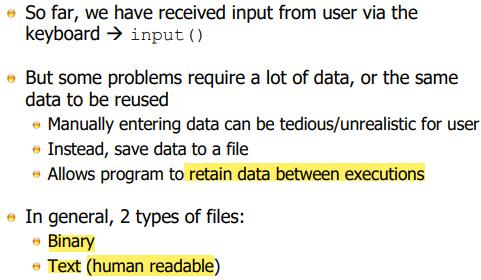
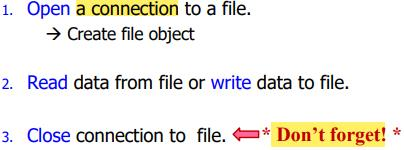
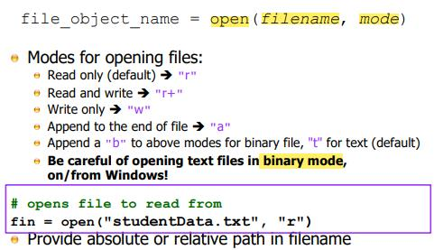
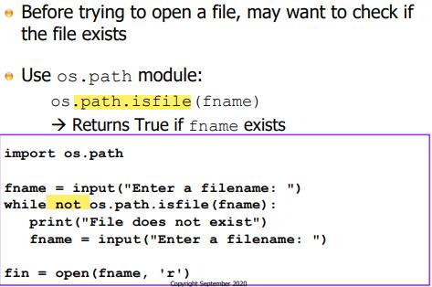
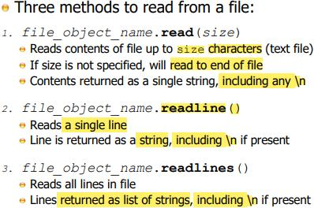
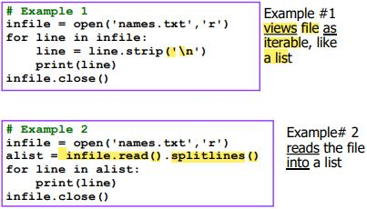
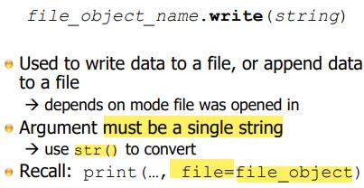
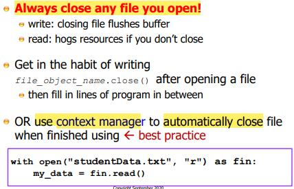
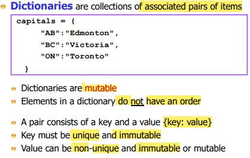
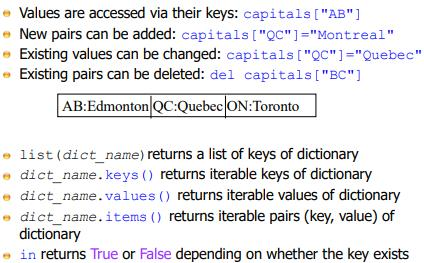

Lecture 8
File I/O
Files for Input / Ouput

The file in Pipeline is not saved
The benefit of human readable outweight the storage cost / effeciency of using binary file
Binary file (database, compressed files, jpg., etc.)
Using Files

Initialization (prepration / create) before use (high overhead operation)
- Python cannot access file (required OS and underlying sys.)
Closing connection (Finalization)
Open File

append mode usually is used for logging and other situations
binary mode
- the invisisble character in the file (e.g: newline) is not processed by Python
- readline: line by line way of processing the file, Python and OS interprets where the line ends (newline character)
- binary mode interprets by number of bytes
In Windows, when a text file is created and written out, it is different from other OS.
- MacOS, Linux, a line of data in a text file ends with a newline (one char)
- Windows, a line of data in a text file ends with a newline and a carriage return (two char.)
- in binary mode, the difference between Windows and non-Windows textfile become visible (text mode, sys. will handle automatically)
- also, an extra invisible char, Windows / DOS format text file will be carried when transform between Windows and non-Windows sys.
Check if File Exists

Methods to Read from File

size chars. - utf-8, ascii
readlines for large file (some known adv. and disadv.)
- require large memory storage, significant latency during reading and writing into memory
- but once is being read into memory, it can be accessed very quickly
Recommendation
design the file format / file IO such that read it line by line (many modules and functionality support line by line processing)
file format be json (javascript object notation) or well-known format based on text files that has many modules support to it
Example

Example 1
- allow python program to be executing on a earlier line of the file while th later line of file will be brought into memory by the OS / python
- overlapping the processing of the file with the reading of the file (prefetching)
Exmaple 2
- file_object.read() will read the entire file into memory
- somehow equivalent to readlines
- can be go backward (since alist is a list)
Writing to File

Close File

- Release buffer / memory to OS / VRAM
Dictionaries

C++ - hashmap (emphasize the implementation of this data type); other programming language - key value stores
Make dictionaries fat to use, fast to access by hash table
- Take a key value
- Instead of look for it by one by one checking to see which value is assoicated with this key (linear search), use hash function to computes the key to a special number called a hash value and then it checks in that data strcuture at that special number or value
- A well-designed hash table can find data far more quickly than searching the data strcuture
- There's overhead. Hashmaps and hash table don't search by lookup
Built-in type: Dictionary
